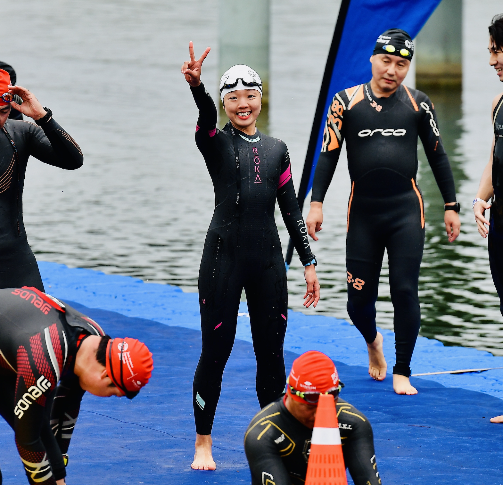
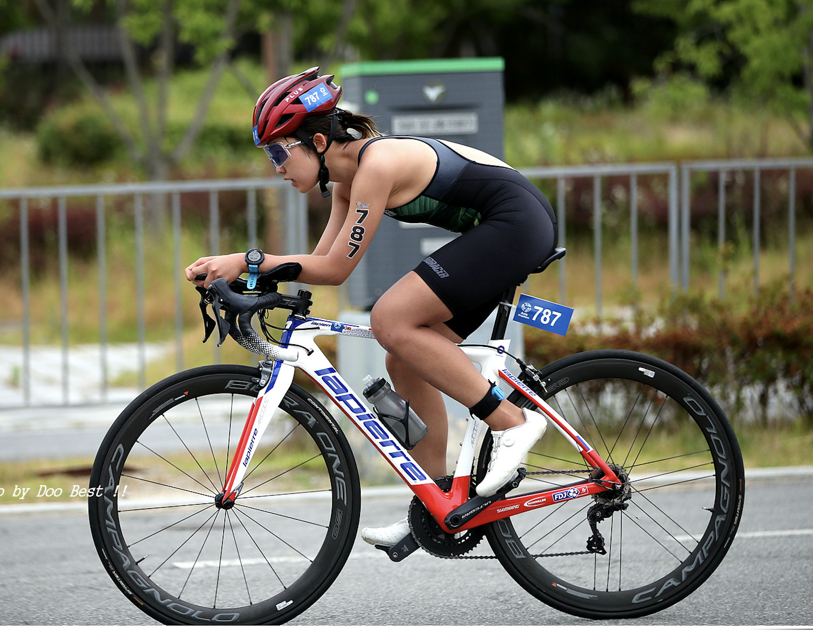
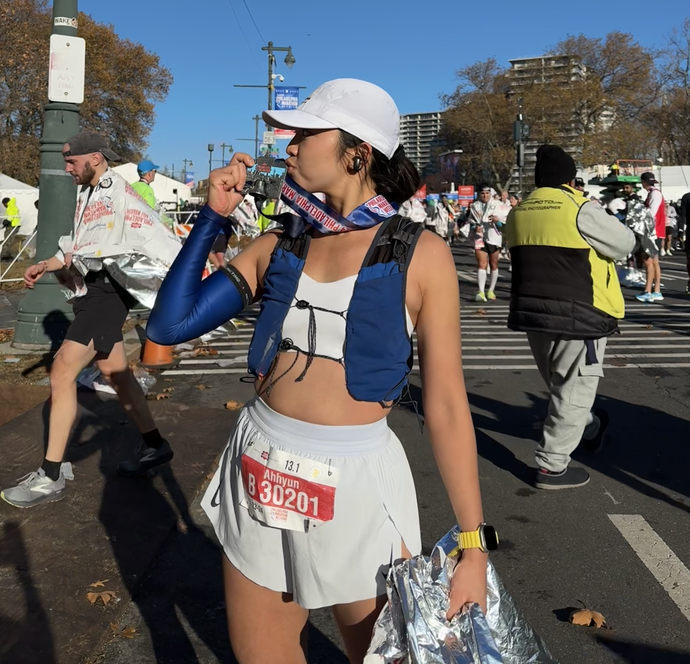
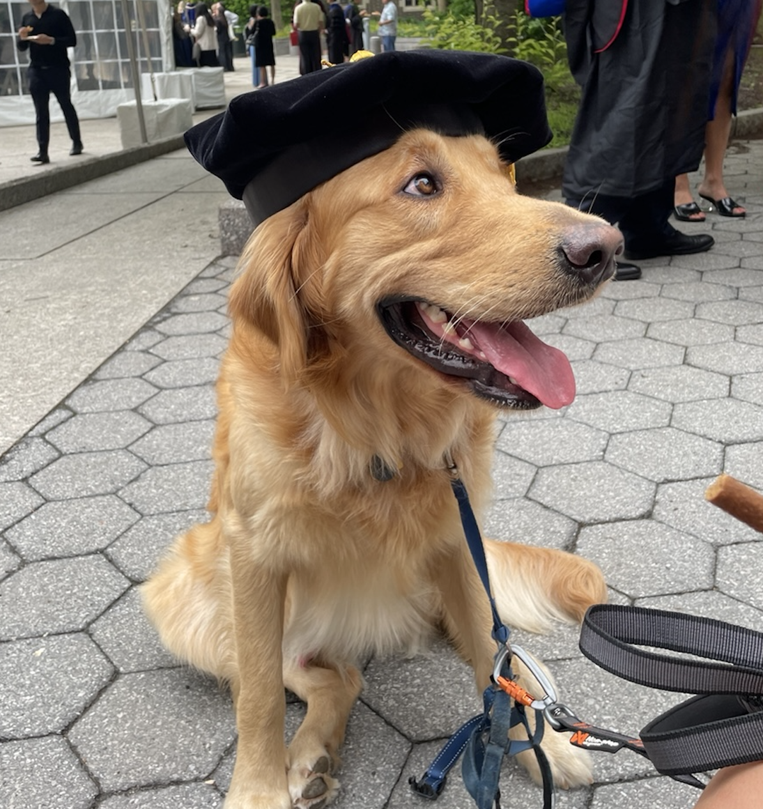

Ahhyun Yuh
Ph.D. Candidate in Computer and Information Science at University of Pennsylvania
United States
About Me
I am a Ph.D. student in Computer and Information Science at the University of Pennsylvania, working under the guidance of Professor Insup Lee and Mingmin Zhao at the PRECISE Lab. My research focuses on developing trustworthy, privacy-preserving LLM-based agents and multimodal sensing systems in health and wellness applications. I am particularly passionate about creating AI systems that can effectively and ethically interact with humans in healthcare settings while maintaining rigorous privacy protections and fostering trust.
My work operates at the intersection of artificial intelligence, human-computer interaction, and healthcare technology. I develop novel approaches for building AI agents that can understand, reason, and interact naturally with users—particularly older adults—while ensuring data privacy and system transparency. Through advanced multimodal sensing and prediction techniques, I create intelligent systems that can unobtrusively monitor health indicators and provide personalized, actionable recommendations.
My research contributions span several key areas: developing explainable AI frameworks for healthcare applications, designing privacy-preserving machine learning algorithms that meet clinical standards, and creating robust multimodal fusion techniques for continuous health monitoring. I actively collaborate with healthcare professionals, clinical researchers, and international partners to ensure my work addresses real-world challenges in digital health and wellness, with particular emphasis on cross-cultural considerations and accessibility for aging populations.
Research Interests
- Human-AI Interactions in Healthcare
- AI Agent Systems & Architecture
- Multimodal Sensing & Prediction
- Trustworthy & Explainable ML
Beyond Research
Outside of research, I am an avid triathlete, training in swimming, cycling, and running. This passion for endurance sports has given me a deep appreciation for physical and mental wellness, as well as the importance of personalized health monitoring. My experiences as an athlete inspire my commitment to designing technologies that empower individuals to better understand and manage their health. I also have a year old golden retriever named Hobak who keeps me active and energized for my journey as a researcher.




Projects
- Designed and implemented a multi-agent framework ensuring privacy preservation and HIPAA compliance for healthcare applications
- Built a real-time mobile voice application with optimized audio pipeline for seamless conversational experiences
- Conducted cross-cultural user studies across Osaka, Japan and Philadelphia, USA to understand cultural nuances in LLM chatbot acceptance among older adults
- Designed and executed IRB-approved clinical experiments measuring mental health outcomes and user engagement metrics
- Validated precision and accuracy of Apple TrueDepth camera for medical-grade facial measurements
- Developed iOS application leveraging ARKit for systematic RGB-D data collection with clinical workflow integration
- Implemented multimodal alignment algorithms for precise registration between RGB imagery and depth data with facial landmark correspondence
- Designed and deployed multi-sensor IoT systems for continuous behavioral pattern monitoring
- Developed time-series analysis algorithms for identifying isolation indicators from sensor data streams
- Conducted comparative cross-cultural studies between Osaka, Japan and Philadelphia, USA populations
- Created validated metrics for quantifying social isolation through ambient sensing data
- Implemented mmWave radar integration with ESP32 microcontroller for low-power wearable applications
- Developed custom ESP-IDF framework for high-frequency radar data acquisition and processing
- Applied advanced signal processing techniques including FFT analysis, beamforming, and adaptive filtering for blink detection
- Designed and deployed distributed audio sensing system across multiple edge platforms (Thingy:52, Thingy:91, Raspberry Pi)
- Developed non-invasive audio collection protocols for activities including cooking, bathing, walking, and general mobility
- Implemented and optimized CNN-based sound event classifier for real-time inference on resource-constrained devices
Collaborators
I have had the privilege of collaborating with outstanding researchers and professionals across various institutions. Here are some of my key collaborators and mentors.